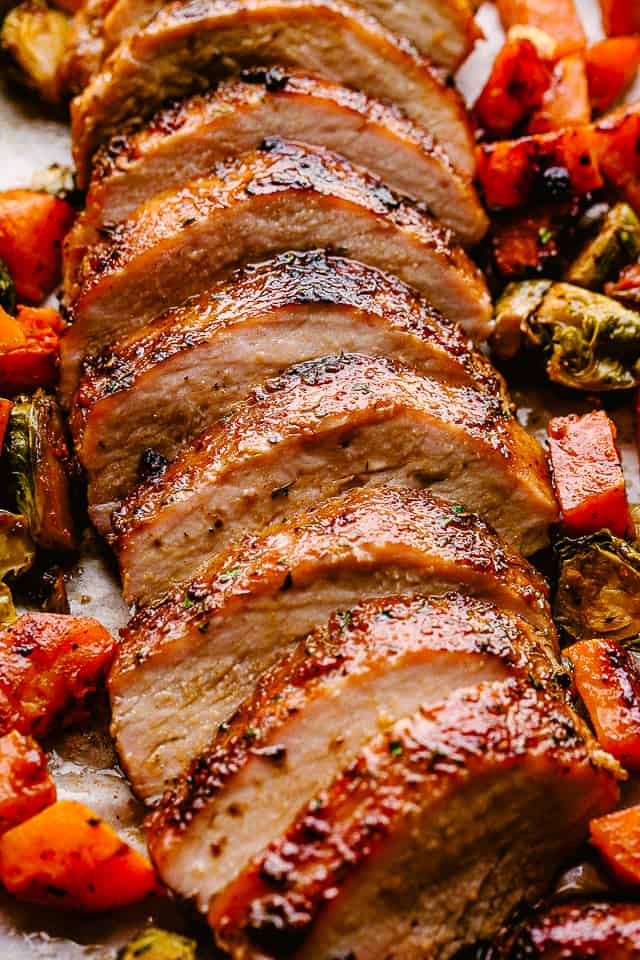

Pork Loin
After making a pork loin that literally fell off the bone while it baked, I knew I had to share my tricks.

Ingredients
- pork loin
- olive oil
- salt
- pepper
- paprika
- thyme
- rosemary
- garlic powder
- onion powder
- honey
- dijon mustard
- garlic
- soy sauce
- butternut squash
- brussel sprouts
- soy sauce
Steps
- The night before, create a dry rub using the salt, pepper, paprika, thyme, rosemary, garlic powder, and onion powder. Rub on the loin, wrap in plastic wrap, and leave in the fridge overnight to marinate.
- Heat oil in a large skillet and sear the meat, 3-5 minutes per side. This will lock in the juices.
- Remove from heat and set pork fat side up on a foil-lined baking sheet.
- Stir together honey, dijon, garlic, soy sauce, and olive oil. Leave a little for the veggies, and brush the rest over the pork loin.
- Roast for 25 minutes at 375 degrees F.
- Cut butternut squash into 1" cubes and halve the brussel sprouts. Toss the veggies in the extra sauce.
- Add the veggies around the pork and make a tent with the foil around the meal. Continue baking for 30 minutes, or until the pork reaches 145 degrees F. Feel free to stir the veggies after they have been cooking for 15 or so minutes.
- Take the meal out of the oven and let stand 10 minutes
- Cut and serve.